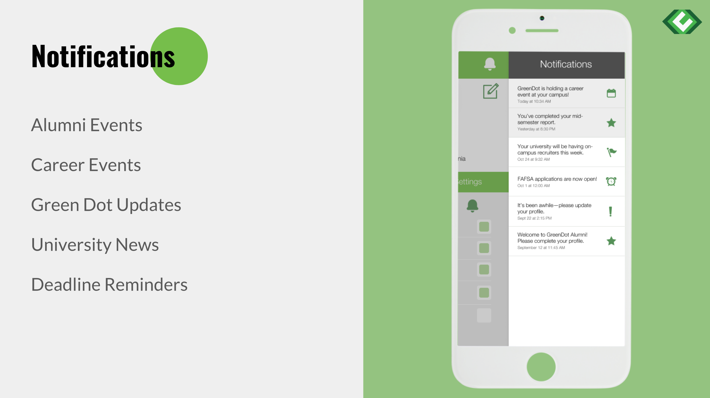
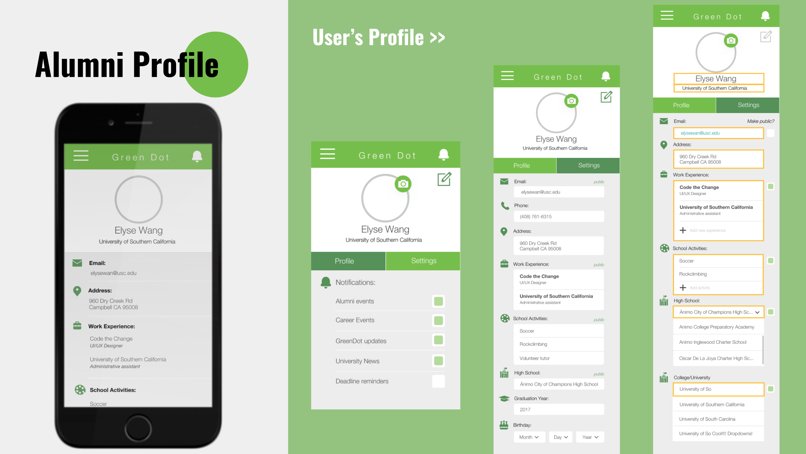
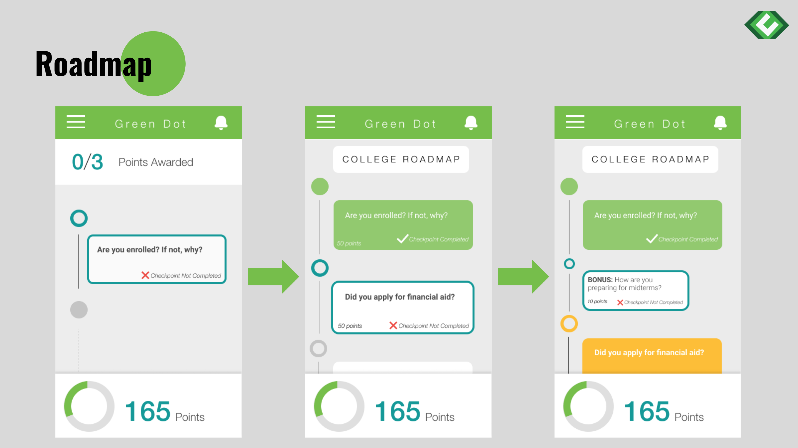
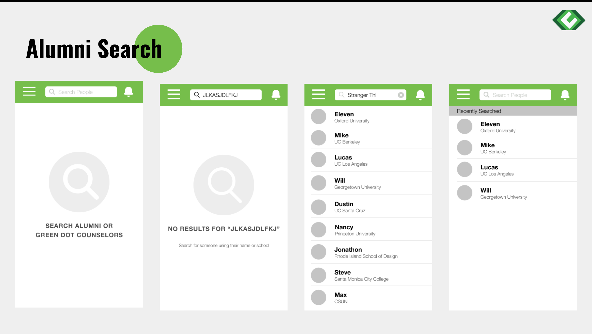

OBJECTIVE
Question: How can Greendot administrators maintain contact with Greendot Public School alumni during their first year of college to decrease number of dropouts?
Solution: Create a mobile app that helps alumni create a Greendot alumni network, allows administrators to create user-specific notifications, as well as gamify the college experience in order to incentivize user participation.
IDEATION/ITERATION
Once we had communicated with the clients to determine the features for the mobile app and back end, we immediately began mockups and wireframes. Using Greendot’s existing brand identity we created an app that seamlessly integrated with the company’s visual aesthetic. Utilizing an agile workflow, we were able to efficiently design and create an intuitive and visually pleasing application.
FINAL
Login

To ensure the app could only be used by Greendot Alumni we designed a multi-step verification system for sign up.
Notifications

One of the most important aspects of the app for our client, we created a robust notification feature. Alumni can sort and prioritize notification categories as well as view their notification history.
Profile

To help create a professional and personal network of alumni we designed a profile where alumni can update their contact information, interests, and work experience.
Roadmap

We needed to create an incentive for people to continue to use the app and update Greendot on their progress through their freshman year in college. The roadmap feature was developed to reward the completion of tasks and keep students on track. Each time and individual completed a checkpoint they would be rewarded with points that could then be redeemed for prizes such as gift cards.
Alumni Search

The idea of creating an alumni network was another feature that elevated this app beyond a simple notification app. It functions as a Linkedin-type system where Greendot Alumni can search up other alumni by school or name and see their interests and activities should the user choose to share them.
Backend
In addition to designing the front end, Code the Change also designed an intuitive backend system using Django. Administrators could create, manage, and send out notifications as well as create databases of updated alumni information.